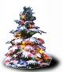
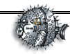

Целью проекта является сбор и классификация доступной информации по OpenBSD, перевод уже существующих источников, а также поддержка русскоязычных пользователей системы. Вы можете поместить здесь свою статью или рассказать о своем опыте. Мы надеемся, что наши усилия не пропадут даром и принесут пользу русскоязычным пользователям OpenBSD.
Что нового на OpenBSD.ru?
21 мая 2002
Появилось
описание русификации gqmpeg (преобразование windows-1251 -> koi8-r),
поддержка русских букв.
В разделе "Файлы" появился
наборчик для помощи тем кто привык собирать
систему из исходников, а packages из портов.
Вообще-то все это произошло чуть раньше, но тогда руки не дошли
написать об этом. :)
30 апреля 2002
Новое оформление сайта.
29 декабря 2001
Всех с новым годом!!!

27 ноября 2001
Открылся IRC-канал проекта OpenBSD.ru
Сервер: irc.openbsd.ru Порт: 6667 Канал: #openbsd Кодировка: win1251
25 ноября 2001
OpenBSD.ru FTP сервер доступен теперь и по IPv6.
Адрес для подключения - ftp.ipv6.openbsd.ru (3ffe:b80:2:2980::2).
01 ноября 2001
Изменился дизайн сайта.
|
© 2000-2002 OpenBSD.ru $RuOBSD: index.html,v 1.75 2002/05/21 02:47:07 form Exp $ |
 |